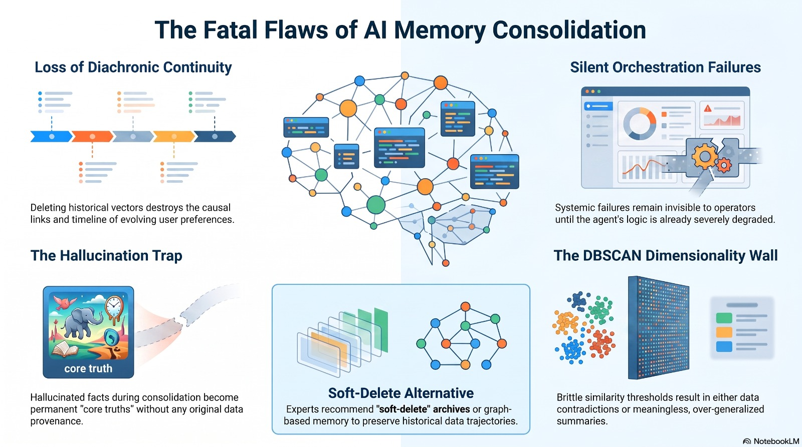

Memory Timeline & System Goal
How AI assistants store knowledge over time, why outdated notes cause confusion after a few months, and how Cogni-Intent keeps answers accurate without ever deleting past history.
Agent Memory Drift Over Time
Clinical System Aim
Medical AI assistants cannot afford to forget or guess. When an AI operates in a hospital or clinic over several years, it collects hundreds of notes, prescription changes, and test results.
linear_scale The 4-Stage Memory Lifecycle
User Query & Intention Extraction
NLP Intent Projection Layer
A physician submits natural language: "What is the current asthma regimen for Patient P-001?" The encoder maps query intent into a normalized 384-dimensional query vector.
Hot-Pool Vector Filtering
ChromaDB Diachronic Scope
The engine retrieves candidate embeddings filtered strictly by is_archived: false. Any older facts that were previously soft-evicted are bypassed during active retrieval.
Autonomous Cluster Surgery
UMAP + HDBSCAN + LLM Healer
In the background, UMAP projections isolate overlapping semantic clusters. When contradictory prescription dates or allergic reactions are detected, the healer synthesizes an authoritative Golden Fact.
Clinical Decision Delivery
Non-Hallucinatory Agent Response
The agent outputs: "Patient P-001 is on Flovent. Symbicort was discontinued due to severe heart palpitations." The physician receives 100% verified, actionable medical truth.
Figure 6: Intent Extraction & Memory Lifecycle
